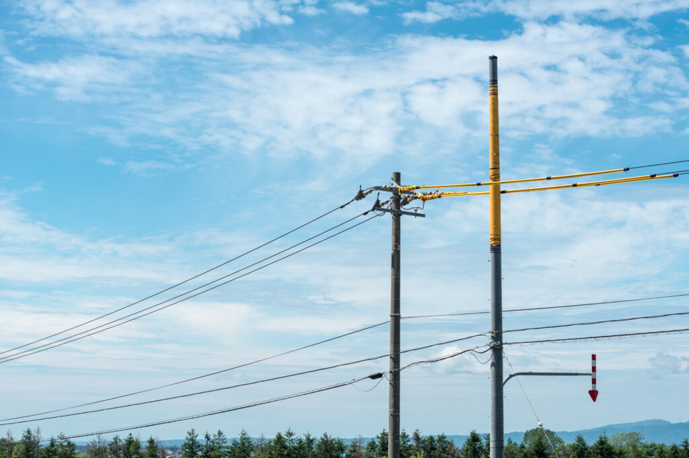

SAITAMA ／ PROTECTIVE PIPE
電線のそばの現場を、
止めずに、安全に。
埼玉県全域で、電柱・電線の防護管取り付けとリースに対応します。上尾・川越を拠点に、取付からリース、撤去までひとつの窓口で。
CASE
電線の近くで、こんな作業はありませんか


SERVICE
星電気工事の仕事
防護管の取付・撤去、防護管リース、配線工事一式。電線まわりの工事を、自社スタッフが一貫して担います。
01 / 03

WORKS
施工実績
埼玉県内で手がけた防護管工事・配線工事の一部をご紹介します。

AREA
埼玉県全域に対応しています
上尾市・川越市の2拠点から、県内の現場へ伺います。
- 上尾市
- 川越市
- さいたま市
- 鶴ヶ島市
- 坂戸市
- 川島町
- 狭山市
- 桶川市
- 北本市
- 鴻巣市
- 所沢市
- ふじみ野市
- その他 埼玉県全域

RECRUIT
ライフラインを守る仕事を、次の世代へ。
普通免許（MT）があれば経験不問。未経験から電気工事士を目指せます。
募集職種
外線電気工事スタッフ
電線への防護管の取付・撤去、外線工事、引込み工事
応募資格
普通自動車免許（MT）
経験・資格は問いません。先輩の隣で、ひとつずつ覚えていけます。